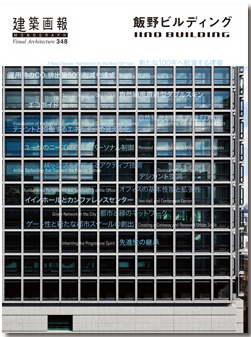
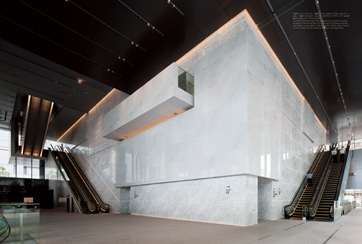
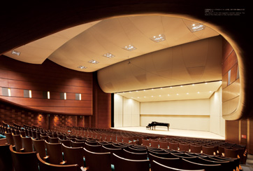
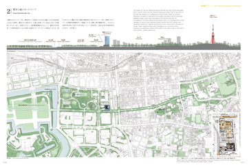
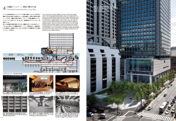

当サイトはJavaScriptをonにしてご覧ください。

建築画報 MONOGRAPH
飯野ビルディング IINOBUILDING
Visual Architecture 348
January 2012 Vol.48
2012年より建築画報 別冊版として、ひとつの建物にフォーカスする1冊まるごと特集号「MONOGRAPH」シリーズがスタート。
第1号となる本号（建築画報 通巻348号）は、2011年に完成した高品位オフィスビル「飯野ビルディング」（竹中工務店）。
環境性能と事業継続性の両方を兼ね備えた最新オフィスビル、全貌の記録をわかりやすく一冊にまとめた。
定価 3,300円（税込）
ISBN 978-4-901772-61-7
ご注文




004 座談会 新たな100年へ航海する建築
本田広昭 伊香賀俊治 星野憲一 服部紀和
Discussion
A New Odyssey: Architecture for the Next 100 Years
By Hiroaki Honda, Toshiharu Ikaga, Kenichi Hoshino, and Norikazu Hattori
013 論文 先進性の継承
菅順二
Essay
Inheriting the Progressive Spirit By Junji Suga
017 寄稿 積み重ねた総和としての飯野ビルディング
金内信二
Essay
The Iino Building as the Sum Total By Shinji Kaneuchi
018 写真構成
Photos
068 CO2排出量削減の5つのアイデア
Five Ideas to Reduce CO2 Emissions
070
1 呼吸する外皮
The Double Skin that Breathes
074
2 人に優しい照明と空調
Comfortable Lighting and Air-Conditioning System
078
3 テナントと協働するエネルギーの見える化
Visualization of the Energy Conservation through Cooperation with Tenants
080
4 ユーザーのニーズに応えるパーソナル制御
Personal Control System to Meet the Users' Needs
082
5 パッシブを補完するアクティブ技術
Active Technology that Supports the Passive System
084 高品位オフィスビル
High-Performance Office Building
084
1 外装のデザイン
Exterior Design
090
2 オフィスの基本性能と拡張性
Fundamental Performance and Extensibility of the Office
094
3 屋上設備と太陽光発電の拡張性
Extensibility for the Rooftop Facilities and the Photovoltaic Generation
095
4 非常時への対応
Response to Emergencies
096
5 オフィスの共用スペースとエコボイド
Shared Space on the Office Floors and Eco-Void
102
6 複合ビルを支えるサービス機能
Service Functions that Support the Complex
104
7 耐震性能を高める
Enhanced Aseismic Performance Level
108 都市環境とのネットワーク
The Local Urban Environment and Its Network
108
1 敷地と飯野ビルディングの歴史
History of the Iino Building and Site
110
2 都市と緑のネットワーク
Green Network in the City
112
3 オープンスペースと緑
Open Space and Landscape Design
114
4 低層部コンセプト──樹海に漕ぎ出す船
The Lower Part Concept: A Ship Sets Sail on an Ocean of Trees
116
5 1階共用エントランスホール
Ground-Floor Common Entrance Hall
120
6 3階オフィスロビー
Third-Floor Office Lobby
122
7 地下ネットワークとの接続
Access to the Underground Network
124
8 店舗共用通路のディテール
Details of the Public Passage on the Retail Floor
126 イイノホールとカンファレンスセンター
Iino Hall and Conference Center
127
1 ゾーニング計画
Zoning Plan
128
2 イイノホールのインテリアと音響計画
The Interior and Acoustics of Iino Hall
132
3 カンファレンスセンターの機能とディテール
Functions and Details of the Conference Center
136 建物を彩るアートとデザイン
Art and Design that Exude the Presence of the Building
136
1 アート計画
The Artwork Plan
140
2 記憶の継承
Inheriting the Memories
142
3 照明計画
Lighting Plan
144
4 記憶をつなぐロゴタイプとディテール
The Logotype and Details that Connect the Memories
146 施工技術・構工法
Construction Technologies and Structural Engineering Methods
146
1 全体スケジュール
Overall Schedule
148
2 カーテンウォールの取り付け
Attaching the Curtain Wall
149
3 設計施工の利点を活かした採用工法
Construction Methods that Make the Most of the Concurrent Design-Construction System
150
4 環境に配慮した複合化工法
Environment-Friendly Composite Construction Methods
154 図面
Drawings
158 データシート
Data Sheet
160 執筆者・編集後記